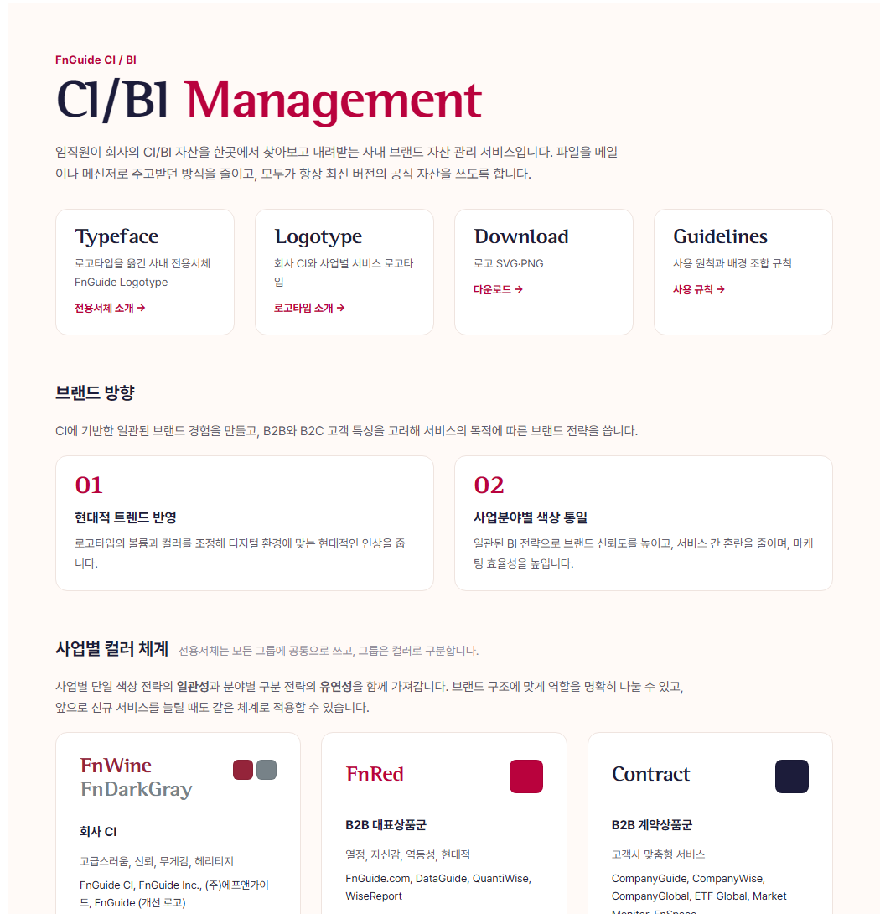
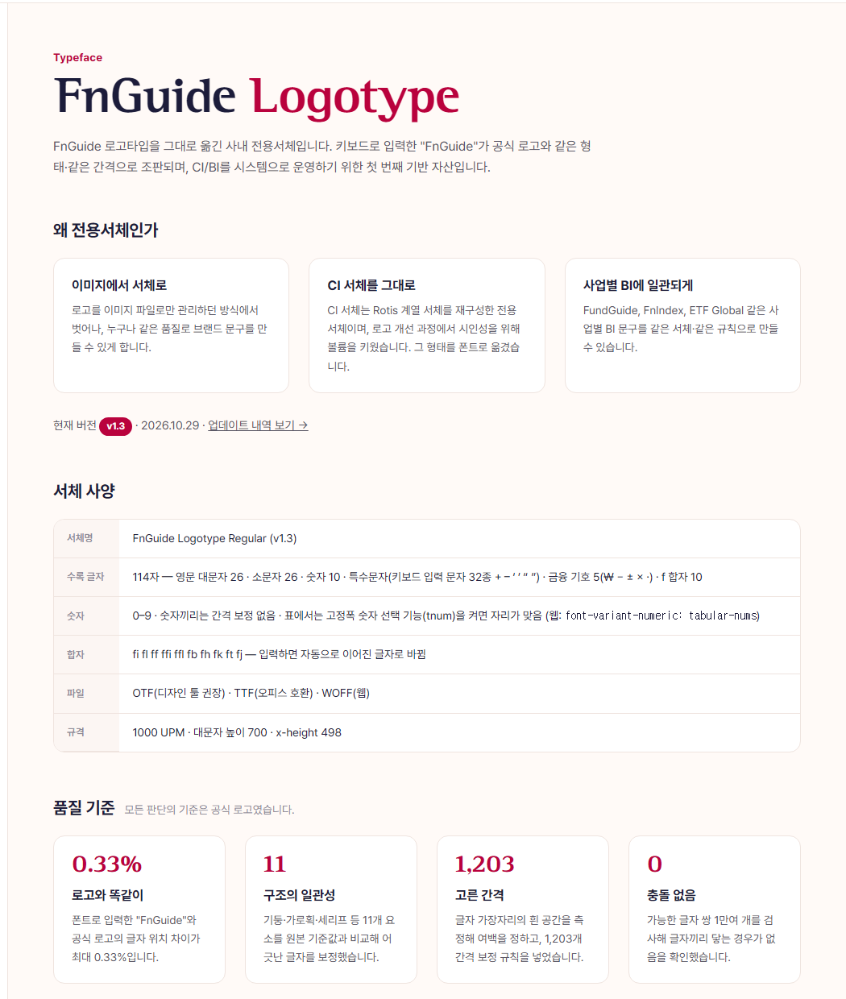
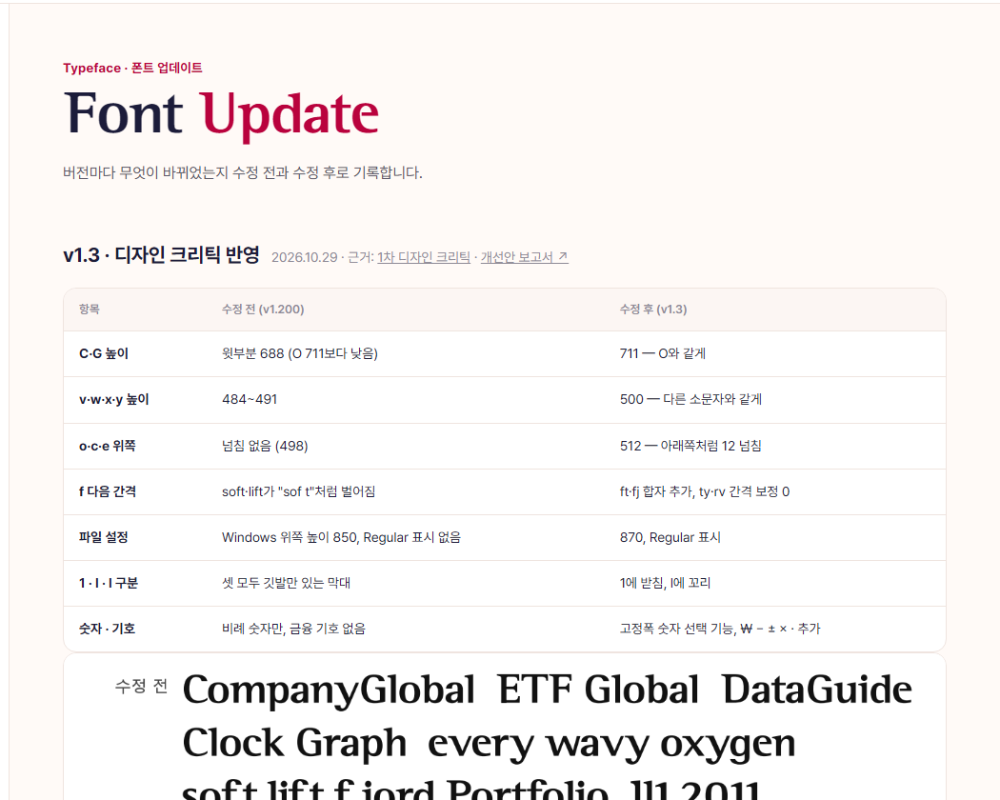
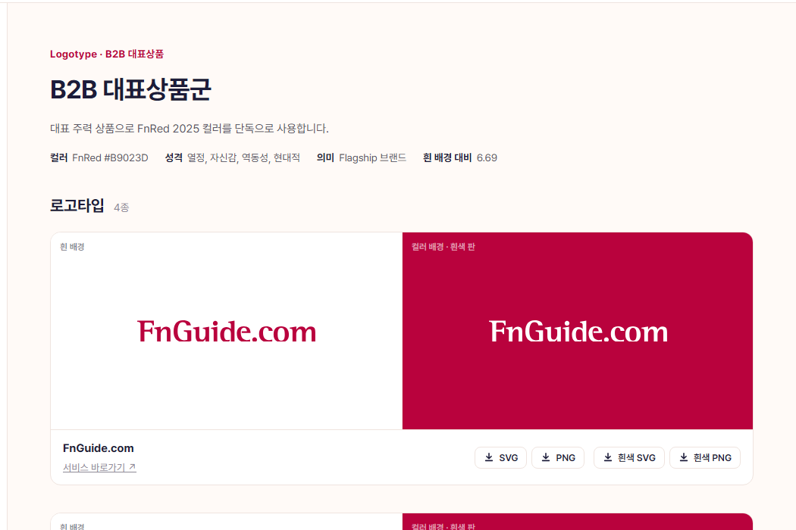
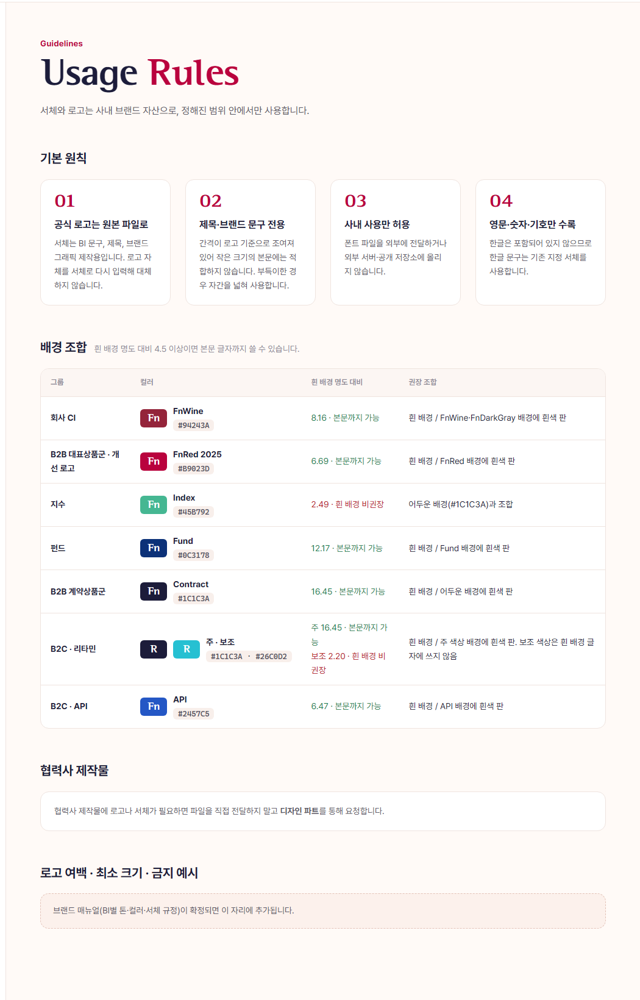

전문가 3인은 AI가 각 분야의 관점을 나눠 맡아 쓴 것으로, 실제 전문가의 검수를 대신하지 않습니다. 세 사람 모두 문장을 직접 고쳐 썼고, 최종 의견은 각자 맡은 기준(방향성·표현력·사용자 이해도)으로 냈습니다. 사이트 문장은 아직 고치지 않았습니다. 이 문서의 수정안 가운데 반영할 것을 골라 주세요.
사이트가 지켜야 할 약속은 "이곳 파일이 언제나 최신 공식본"입니다. 그런데 서체 소개의 자랑("입력하면 로고와 같다")과 사용 규칙의 금지("로고를 서체로 입력하지 않는다")가 부딪힙니다. 이것부터 한 방향으로 맞춰야 합니다.
문장이 운영자 시점("~하도록 합니다")과 추상 명사("일관성·유연성·효율성")에 기대고 있습니다. 사용자 시점의 짧은 문장과 구체적인 그림으로 바꾸고, 같은 것을 부르는 이름을 하나로 통일해야 합니다.
주 사용자는 비디자이너 임직원인데, 디자이너용 수치(UPM, tnum, 688→711)가 앞에 나옵니다. 첫 화면은 할 일 4개 중심으로, 수치는 뜻을 붙이거나 접고, 문의처처럼 다음 행동에 필요한 정보를 채워야 합니다.
제안자: 전 = 브랜드 전략가, 카 = 시니어 카피라이터, U = UX 콘텐츠 전문가
| 등급 | 지금 | 수정안 | 제안 |
|---|---|---|---|
| 수정 필요 | 콘텐츠가 정리되면 현재의 AI 디자인은 업데이트 될 예정입니다. | 정식 공개 전 삭제. 남겨야 한다면: 시험 운영 중입니다. 의견은 디자인 파트로 보내 주세요. (맞춤법: 업데이트될) | 전·U |
| 수정 필요 | (문의처 없음) | 사용 규칙과 아래쪽 안내에 "문의: 디자인 파트 (팀 메일 / 그룹웨어 경로)" 추가. 개인 이름은 쓰지 않음 | U |

| 등급 | 지금 | 수정안 | 제안 |
|---|---|---|---|
| 개선 권장 | 임직원이 회사의 CI/BI 자산을 한곳에서 찾아보고 내려받는 사내 브랜드 자산 관리 서비스입니다. 파일을 메일이나 메신저로 주고받던 방식을 줄이고, 모두가 항상 최신 버전의 공식 자산을 쓰도록 합니다. | 로고·서체·컬러, 이제 여기서 받으세요. 이곳 파일이 항상 최신 공식본이니, 메일로 받은 옛 파일 대신 이곳 파일을 쓰면 됩니다. | 카·U |
| 개선 권장 | 카드 버튼: 전용서체 소개 → / 로고타입 소개 → / 다운로드 → / 사용 규칙 → | 서체 받기 → / 로고 보기 → / 로고 받기 → / 써도 되는지 확인 → | U |
| 개선 권장 | CI에 기반한 일관된 브랜드 경험을 만들고, B2B와 B2C 고객 특성을 고려해 서비스의 목적에 따른 브랜드 전략을 씁니다. | 하나의 CI 아래 일관되게, 고객에 따라 유연하게. B2B 서비스는 회사와 같은 서체·사업별 컬러로 묶고, B2C 서비스는 고객에 맞춘 독립 브랜드로 운영합니다. | 전 |
| 개선 권장 | 현대적 트렌드 반영 — 로고타입의 볼륨과 컬러를 조정해 디지털 환경에 맞는 현대적인 인상을 줍니다. | 화면에서 더 또렷하게 — 글자를 조금 더 굵게, 컬러를 FnRed 2025로 바꿔 작은 화면에서도 잘 보이게 했습니다. | 카 |
| 개선 권장 | 사업분야별 색상 통일 — 일관된 BI 전략으로 브랜드 신뢰도를 높이고, 서비스 간 혼란을 줄이며, 마케팅 효율성을 높입니다. | 컬러만 봐도 어느 사업인지 — 사업마다 하나의 컬러를 정해, 서비스가 늘어도 헷갈리지 않게 합니다. | 카 |
| 개선 권장 | 사업별 단일 색상 전략의 일관성과 분야별 구분 전략의 유연성을 함께 가져갑니다. 브랜드 구조에 맞게 역할을 명확히 나눌 수 있고, 앞으로 신규 서비스를 늘릴 때도 같은 체계로 적용할 수 있습니다. | 같은 사업의 서비스는 같은 컬러를 씁니다. 새 서비스가 생겨도 어느 사업인지에 따라 컬러가 바로 정해집니다. | 카·U |
| 개선 권장 | 회사에서 제공하는 서비스 가운데 아직 로고타입 업데이트가 진행되지 않은 서비스는 차후 업데이트에 반영될 예정입니다. | 아직 전용서체로 바뀌지 않은 서비스 로고는 차례로 바꿀 예정입니다. 그 전까지는 이 사이트에 있는 지금 로고를 쓰세요. | U |
| 개선 권장 | 기대 효과 — 브랜드 일관성 강화 / 내·외부 커뮤니케이션 효율 향상 / … | 섹션 삭제(카) 또는 "이 사이트에서 할 수 있는 일"로 대체(U) — 결정 필요 | 전·카·U |
| 개선 권장 | v1.200 — f m M s S y r 디자인을 수정하고 I·f·m·r 기둥 굵기를 보정했습니다. | 일부 영문 글자(f m M s S y r)의 모양을 다듬었습니다. 이미 설치했다면 새 파일로 다시 설치하세요. | U·카 |
| 개선 권장 | v1.3 — 디자인 크리틱 결과를 반영해 글자 높이를 맞추고, 숫자 1·소문자 l 구분, ft·fj 합자, 금융 기호와 고정폭 숫자를 더했습니다. | 숫자 1과 소문자 l을 알아보기 쉽게 바꾸고, ₩ 같은 금융 기호와 표에 맞는 숫자를 더했습니다. 새 파일로 다시 설치하세요. | U·카 |

| 등급 | 지금 | 수정안 | 제안 |
|---|---|---|---|
| 수정 필요 | FnGuide 로고타입을 그대로 옮긴 사내 전용서체입니다. 키보드로 입력한 "FnGuide"가 공식 로고와 같은 형태·같은 간격으로 조판되며, CI/BI를 시스템으로 운영하기 위한 첫 번째 기반 자산입니다. | FnGuide 로고의 글자 모양을 그대로 옮긴 사내 전용서체입니다. 서비스 이름과 제목을 로고와 같은 인상으로 쓸 수 있습니다. 단, 로고 자리에는 서체로 입력하지 말고 원본 로고 파일을 쓰세요. | 전 |
| 개선 권장 | …로고 개선 과정에서 시인성을 위해 볼륨을 키웠습니다. | …로고를 개선하면서 더 잘 보이도록 글자를 조금 굵게 다듬었습니다. | 카 |
| 수정 필요 | 품질 기준 — 1,203개 간격 보정 규칙 · 1만여 쌍 충돌 없음 · 0.33% | v1.3(ft·fj 합자 추가) 이후 다시 재지 않았습니다. 다시 재거나 "v1.200 기준"이라고 표시합니다. | U·전 |
| 개선 권장 | 숫자 — 0–9 · 숫자끼리는 간격 보정 없음 · 표에서는 고정폭 숫자 선택 기능(tnum)을 켜면 자리가 맞음 | 0–9. 표에서 숫자 자리를 맞추려면 '고정폭 숫자' 기능을 켜세요. (웹 개발용: font-variant-numeric: tabular-nums) · 규격 줄(UPM·x-height)은 "디자이너용"으로 표시 | U |
| 개선 권장 | 사내 사용만 허용됩니다. 외부 전달·공개 저장소 업로드 금지. | 사내에서만 쓸 수 있습니다. 외부로 보내거나 공개된 곳에 올리지 마세요. 외부 제작물에 필요하면 디자인 파트에 요청하세요. | 카 |
| 유지 | 문구를 입력하고 그룹 컬러를 골라 보세요. / PowerPoint·Word에서는 "글꼴 커닝"을 켜야… | 사용자 행동을 정확히 짚는 문장. 그대로 둡니다. | U |

| 등급 | 지금 | 수정안 | 제안 |
|---|---|---|---|
| 개선 권장 | 버전마다 무엇이 바뀌었는지 수정 전과 수정 후로 기록합니다. | 서체가 바뀔 때마다 무엇이 달라졌는지 기록합니다. 서체를 쓰기만 한다면 맨 아래 '받기'만 확인하세요. | 전 |
| 개선 권장 | 표: 항목 / 수정 전 (v1.200) / 수정 후 (v1.3) — 예: 윗부분 688 → 711 | 첫 열에 "달라지는 점"을 쉬운 말로 — 예: 대문자 C·G가 O와 같은 높이로 보입니다. 수치 열은 뒤로 | U |
| 개선 권장 | 버전마다 타이포그래픽·CI/BI·웹 디자인 관점에서 서체를 점검하고, 그 결과와 반영 여부를 이력으로 남깁니다. | 서체가 새 버전이 될 때마다 전문가 관점으로 점검한 기록입니다. 디자인 파트와 서체 관리자를 위한 자료입니다. | 전 |
| 유지 | ⓘ 전문가 3인은 AI가 각 분야의 관점을 나눠 맡아 쓴 것으로… | 신뢰를 지키는 고지문. 그대로 둡니다. | 전 |

| 등급 | 지금 | 수정안 | 제안 |
|---|---|---|---|
| 수정 필요 | 지수 서비스를 대표하는 브랜드 컬러입니다. | FnIndex·WiseIndex·CryptoGuide 같은 지수 서비스 그룹입니다. Index 컬러를 함께 씁니다. | 카·U |
| 수정 필요 | 펀드 및 평가 서비스를 대표하는 브랜드 컬러입니다. | FundGuide·FnSpectrum 같은 펀드·평가 서비스 그룹입니다. Fund 컬러를 함께 씁니다. | 카·U |
| 수정 필요 | 회사별로 ASP 또는 웹서비스로 제공되는 브랜드 컬러입니다. | 고객사에 맞춰 제공하는 계약형 서비스 그룹입니다(고객사 전용 화면·웹 서비스). Contract 컬러를 함께 씁니다. | 카·U |
| 개선 권장 | 흰 배경 대비 6.69 | 흰 배경 대비 6.69 — 작은 글자도 잘 보임(4.5 이상) | U |
| 개선 권장 | (추후 서비스 업데이트시 로고타입 변경 예정) | (로고 변경 예정 · 바뀌기 전까지 지금 파일 사용) (맞춤법: 업데이트 시) | U |
| 수정 필요 | 단도 색상 (제목) / 단색 파일 (버튼) | "단색"으로 통일. "단도"는 인쇄 용어라 임직원에게 낯섦 | 카 |
| 개선 권장 | 헤리티지의 클래식 세리프 — 헤리티지를 강조한 클래식한 세리프 타입으로 2000년에 제작된 회사 로고타입입니다. | 2000년의 클래식 세리프 — 회사의 역사를 담은 클래식 세리프 로고타입으로, 2000년에 만들었습니다. | 카 |
| 개선 권장 | Dark Wine → FnRed — 미래 지향적인 컬러로, 사용자와 시대의 트렌드를 이끌어낼 수 있도록 로고타입을 개선했습니다. | Dark Wine에서 FnRed로 — 더 밝고 선명한 빨강으로 바꿔, 화면에서 힘 있게 보이도록 했습니다. | 카 |
| 유지 | FnGuide의 CI는 금융시장을 바라보는 새로운 창이라는 컨셉으로 디자인하였습니다. | 사이트에서 유일한 브랜드 이야기. 홈에서도 한 번 쓰기를 권함 | 전 |

| 등급 | 지금 | 수정안 | 제안 |
|---|---|---|---|
| 개선 권장 | 메뉴 "로고타입 다운로드" / 제목 "Assets" | 작은 제목을 "Download · 로고 받기"로, 화면에 서체 받기 링크 한 줄 추가(사용자는 다운로드에서 서체도 찾음) | U |
| 유지 | SVG(크기를 바꿔도 깨지지 않는 그림)와 PNG(투명 배경 이미지, 원본의 4배 크기)… | 좋은 풀이. 다만 "흰색 판" → "흰색 버전" | U·카 |
| 개선 권장 | 공식 로고는 원본 파일로 — 서체는 BI 문구, 제목, 브랜드 그래픽 제작용입니다. 로고 자체를 서체로 다시 입력해 대체하지 않습니다. | 로고 자리에는 원본 파일 — 로고가 들어갈 자리에는 서체로 입력하지 말고 로고 파일을 넣으세요. 서체는 제목·문구·그래픽용입니다. | 카·전 |
| 개선 권장 | …부득이한 경우 자간을 넓혀 사용합니다. | …작은 글자에 꼭 써야 한다면 글자 사이를 조금 넓혀 쓰세요. | 카 |
| 수정 필요 | 한글은 포함되어 있지 않으므로 한글 문구는 기존 지정 서체를 사용합니다. | 한글 문구는 (지정 한글 서체 이름)을 쓰세요. — 서체 이름 결정 필요 | U |
| 개선 권장 | 흰 배경 명도 대비 4.5 이상이면 본문 글자까지 쓸 수 있습니다. | 흰 바탕과의 대비 값이 4.5 이상이면 작은 글자에도 쓸 수 있습니다. 그보다 낮으면 큰 제목이나 그래픽에만 쓰세요. | U |
| 유지 | Index·리타민 보조색 경고문 | 이유와 대안을 함께 주는 좋은 예. 그대로 둡니다. | U |
| 지금 | 전략가안 | 카피안 | UX안 |
|---|---|---|---|
| CI/BI 디자인 운영 | 브랜드 개요 | 홈 | 브랜드 개요 |
| 브랜드 전용서체 소개 | 전용서체 | 서체 | 전용서체 |
| 브랜드 로고타입 소개 | 로고타입 | 로고 | 로고타입 |
| 로고타입 다운로드 | 다운로드 | 받기 | 로고·서체 받기 |
| 사용 규칙 | 사용 규칙 | 규칙 | 사용 규칙 |
① 사이트의 약속을 "이곳 파일이 언제나 최신 공식본"으로 모읍니다. ② 서체의 자랑과 로고 사용 금지를 한 방향으로 맞추는 것이 1순위입니다. ③ 내부 기록(크리틱·업데이트 수치)과 사용자 안내를 구분해, 화면 첫 줄에서 대상을 밝힙니다. ④ "기대 효과"처럼 보고서에서 옮겨 온 말은 덜어 내고, CI 컨셉 문장("금융시장을 바라보는 새로운 창")을 브랜드 이야기의 중심으로 씁니다.
① 운영자 시점("~하도록 합니다")을 사용자 시점("~하세요")으로 바꿉니다. ② 추상 명사 묶음을 구체적인 그림으로 바꿉니다("일관성·유연성·효율성" → "컬러만 봐도 어느 사업인지"). ③ 용어표를 정합니다: 로고/로고타입, 흰색 버전, 단색, 고정폭 숫자. ④ 영어 제목 + 한국어 작은 제목 짝을 모든 화면에 같은 방식으로 씁니다.
① 첫 화면을 할 일 4개(서체 받기·로고 받기·컬러 확인·써도 되는지 확인) 중심으로 바꿉니다. ② 문의처와 한글 서체 이름처럼 다음 행동에 필요한 정보를 채웁니다. ③ 숫자는 뜻을 붙이거나 디자이너용으로 접습니다. ④ 업데이트 소식은 늘 "그래서 나는 무엇을 하면 되는지"로 끝냅니다. ⑤ 다운로드 화면에서 서체도 찾을 수 있게 합니다.